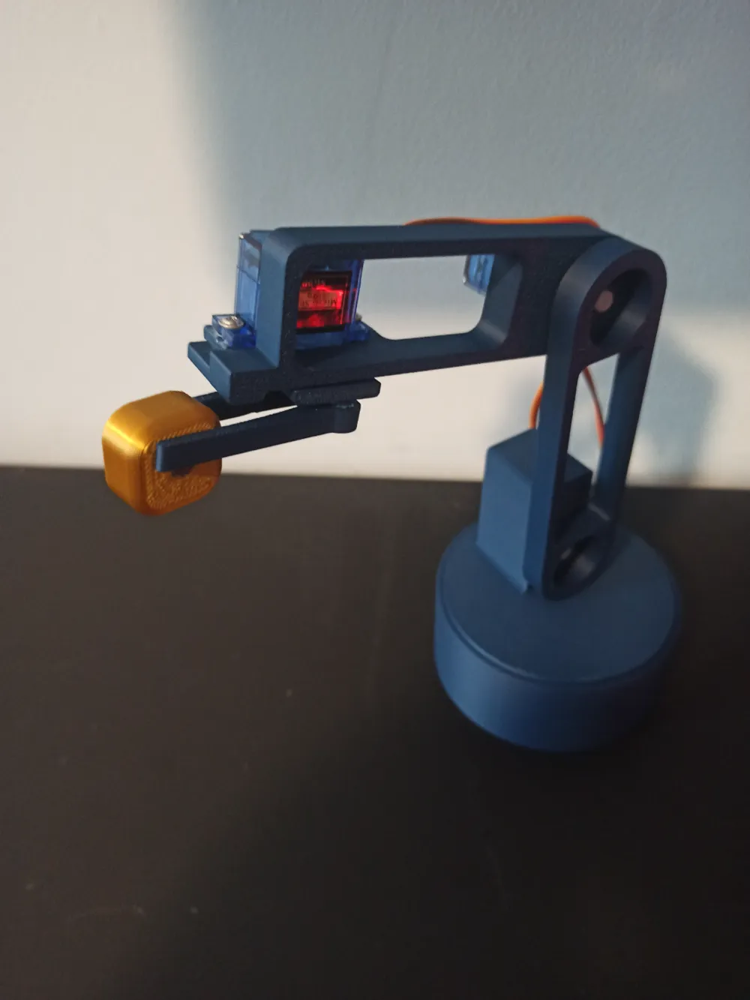

Curso de robótica con Arduino
Brazo robot por gestos
Un alumno mueve la mano frente a su webcam y, a miles de kilómetros, un Arduino responde. La detección corre en el navegador con MediaPipe, los datos viajan por internet con MQTT y llegan al robot por USB con Web Serial.

Cómo viajan los datos
El camino de un gesto, desde la webcam del alumno hasta los motores del brazo.
-
Alumno
Webcam
Filma la mano en vivo.
-
Alumno
MediaPipe
Ubica 21 puntos de la mano y calcula X, Y, dedos y gesto.
-
Internet
Broker MQTT
Recibe el mensaje por internet y se lo entrega al profesor.
-
Profesor
Página del profesor
Valida el mensaje y lo envía por USB con Web Serial.
-
Robot
Arduino
Mueve los motores del brazo según el gesto.
El mensaje que viaja Una línea de texto, hasta 5 veces por segundo.
X:52- horizontal, de 0 a 100
Y:31- vertical, de 0 a 100
D:2- dedos extendidos
G:V- gesto
Para tener en cuenta
- El receptor y la versión local necesitan Chrome o Edge de escritorio (Web Serial).
- El emisor necesita una webcam y un navegador actualizado.
- El profesor entrega la sala, el usuario y la contraseña para conectarse al broker.